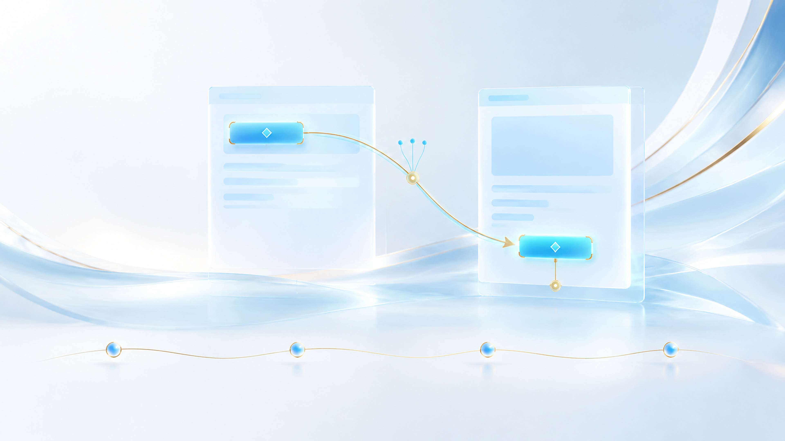

绑定创新页面版本绑定 · 派发前再观察 · 唯一控件重绑
让每次操作，都对准当前页面
银龄智办
动作绑定观察快照
动作携带页面版本与观察快照，
保留目标选择的上下文。
派发前重新观察
执行前获取当前页面，
重新核对应用与窗口。
唯一身份重绑定
几何身份优先，稳定特征联合匹配；
唯一定位后，同步更新目标与快照。
布局重排示意
规划时观察快照
派发前当前页面
同一目标控件
同一目标控件
唯一身份匹配
文字 · 角色 · 结构
布局展开
目标随页面下移
绑定同步更新
目标 · 版本 · 观察快照
携带观察快照
动作与页面版本关联
派发前再观察
获取本轮最新页面
唯一身份重绑
几何优先 · 稳定身份匹配
更新绑定后执行
依据当前页面派发动作